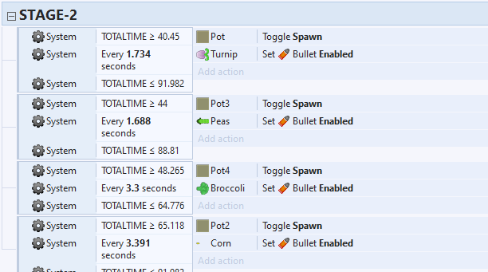
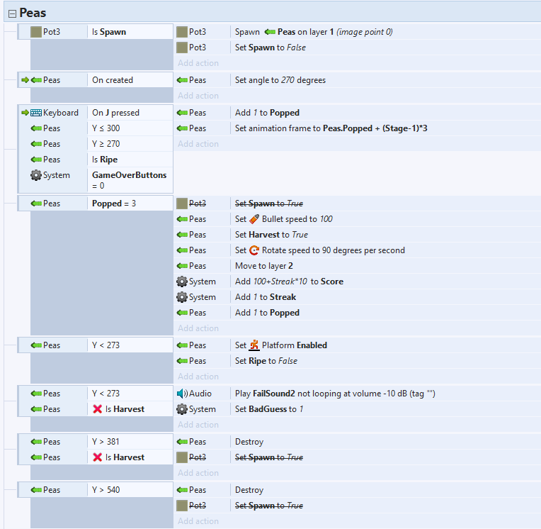

Harvesting vegetables to the beat
My first GameJam that didn't completely crash and burn. Once again made in Construct 2 (as many of the other members of my team were much more comfortable with that engine at the time) this game is focused around uprooting plants to a music track in the background using different types and methods of control. This is also the first GameJam that i participated where the team I was on won a prize (although sadly it was not first place).
There were different members of our team who were handling the art and the music but it was my job to handle all the scripting and events for the game. The most important part of a rhythm game is making sure the gameplay lines up with the music in the game. Although this could be manually done this would be very inefficient, the much better alternative would be to use an algorithm. Looking at the example, this is the code that syncs the gameplay to the music in stage 2 (as there are 5 different stages in the song with different rhythms). Each vegtable is alligned to a different instrument of the song and the frequency of the beats of each instrument is gathered manually. The corresponding vegtable is spawned incrementally thougthout the whole stage to the beat of each instrument until the next stage begins and the rhythm changes. Although it may seem like the obvious choice I belive this was a very efficient way to create a basic rhythm based system when under the time constrains of a GameJam. It may seem rigid, extra crops can be manually to spice things up which was done to add some difficulty in the later stages.
Aside from events that control the graphics and the controls of the game, the other big part of this program that I want to cover is the events for what the crops actaully do after they've been spawned in. The example I'll be highlighting is the peas which the most complex of the four vegetables. To start, the crop is spawned behind the pot and a bool is set to prevent another crop spawning in the same spot, then the crop is allgined the correct orientation. The pea has to be harvested by pressing a button three times and this is represented by the variable 'popped'. When J is pressed (and the crop is at the correct hight, which serves as a form of validation), popped is increased by 1 and an animation is played and if popped ever reaches 3, the next set of events occurs. A harvesting animation is set off using certain physics like changing the direction of motion and lowing the speed of the object, the layer is changed to also aid with the animation, the streak and score is increased and a bool is changed. Because of the harvesting animation, no matter if the crop is being harvested or not, it will fall the bottom of the screen. When the Y axis is lower that the bottom of the screen the bool is check to determine if it was successfully harvested or not which will affect the rest of the game accordingly. There is a block of code similar to this for each crop with obvious variations depending on the animation and the method of harvesting which all come together to allow the game to run smoothly.
Making and coding a rhythm game deffinitely provided a new kind of challange, looking at how to line up the gameplay to the music and making four different control schemes to enable the game to work. It was a new and fun experience and something great to do in a GameJam to dip my toes into a genre of game I have never looking into before providing a unique experience that allowed me to learn a lot.